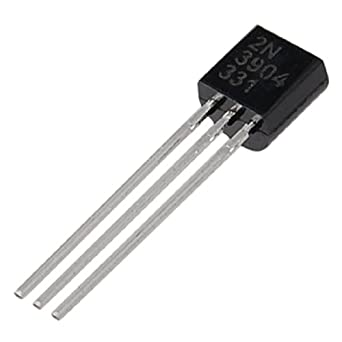

Verify whether a set of numbers is randomly distributed or not
IBM Summit
10,000 years
Sycamore
3 minutes & 20 seconds
Quantum computer is a computer that runs on Qubits instead of traditional Bits
Bit
Modern computers store the information in units of digital bits 0 or 1.
What are these 0s & 1s?
It is on the hardware level -> whether the current is flowing through a transistor or not
Transistor

Transistors are semiconductor devices that can be controlled to allow or block flow of current
If current is allowed it's "on" state or 1
If current is blocked it's "off" state or 0
This flow of current is basically flow of "electrons" through the electrical circuit
e-
Flow of electrons are blocked in the "off" state by introducing a barrier of insulating materials
Property 1: Quantum Tunneling
Qubit
Spin of an Electron
Polarization of a Photon
Quantum Super Position
Chess Game
Applications
Database Search
Cryptography
Chemistry
Biological Simulations
Quantum Entanglement